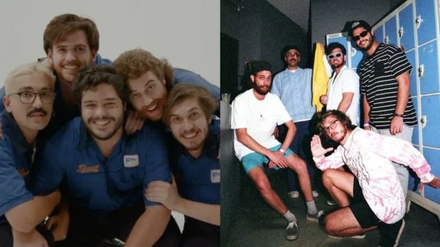

O Sucesso Astronômico de "Acorda Pedrinho"
A música 'Acorda Pedrinho' foi publicada no dia 21 de março de 2022. A música foi um sucesso nas redes sociais, especialmente no Youtube e TikTok, onde o clipe e o áudio da música se tornaram virais, impulsionando a banda Jovem Dionísio para o sucesso.
A Fascinante História Por Trás de "Acorda Pedrinho"
A música "Acorda Pedrinho", da banda Jovem Dionísio, não é apenas um hit contagiante; ela nasceu de uma história tão peculiar quanto divertida, que se tornou parte do seu charme irresistível.
O Palco da Inspiração: O Bar "Woods" em Curitiba
Tudo começou em um lugar simples e aconchegante em Curitiba: o bar "Woods". Os integrantes da banda Jovem Dionísio eram assíduos frequentadores e foi lá que a inspiração para o que viria a ser um fenômeno nacional floresceu.
No "Woods", havia uma mesa de sinuca muito popular. E, ao lado dela, um personagem que se tornou a peça central dessa história: um senhor, carinhosamente apelidado de Pedrinho, que tinha o hábito de tirar um cochilo em um sofá próximo à mesa.
Ritual do Jogo e a Chamada Inesperada
Sempre que a bola preta – a última e decisiva do jogo de sinuca – estava prestes a ser encaçapada, um ritual informal tomava conta do bar. Alguém, em meio à empolgação, gritava a plenos pulmões: "Acorda, Pedrinho!"
O chamado era o sinal para Pedrinho despertar do seu sono e, quase que instantaneamente, vibrar com o desfecho da partida, acompanhando o momento crucial do jogo. Essa cena, repetida diversas vezes, ficou gravada na memória dos músicos.
Da Anedota do Bar ao Sucesso Musical
A ideia da música surgiu de forma natural e despretensiosa. Enquanto a banda buscava inspirações para novas composições, a lembrança desse divertido ritual do bar veio à tona. A melodia e a letra começaram a tomar forma, embaladas pela simplicidade e a repetição carismática do grito "Acorda Pedrinho!".
Lançada em 21 de março de 2022, a canção rapidamente explodiu nas redes sociais, especialmente no TikTok e no YouTube. O clipe descontraído e a sonoridade única da banda contribuíram para a sua viralização instantânea, transformando "Acorda Pedrinho" em uma das músicas mais tocadas no Brasil e com destaque em paradas globais de streaming.
O sucesso da música não só catapultou a Jovem Dionísio para o estrelato, com shows por todo o país, mas também provou como uma observação do cotidiano, cheia de autenticidade e leveza, pode se transformar em um fenômeno cultural. E tudo isso, graças a um "Pedrinho" que tirava um cochilo no lugar certo, na hora certa!